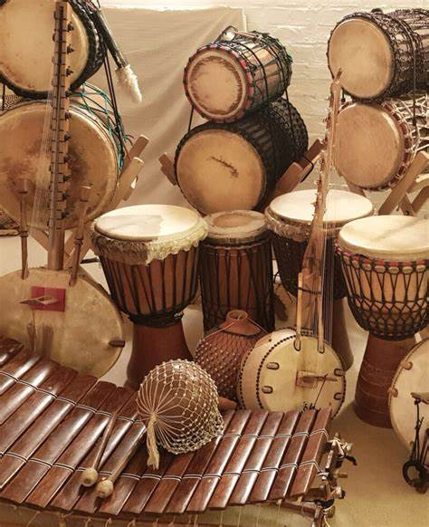

Come have a look around
01 / Technology & learning
IT & Network Security
Things I build, fix, and learn.
Work, study, and curiosity along the way.

02 / Culture & communityWest African Drumming
Memories, music, and shared rhythm.
A little collection of moments I love.